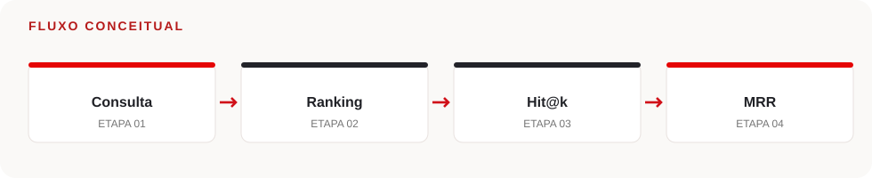

A IA encontrou a informação certa?
Abertura · 10 minutos
A aula começa com a verificação da atividade entregue após a Aula 8. O aluno deve ter executado a aplicação em casa, registrado resultados e respondido às questões do handout. O quiz verifica a análise, não a escrita de código.
1. O problema de decisão
O chatbot documental recupera trechos, mas alguns aparecem muito abaixo na lista. O analista quer saber se a busca densa vale o custo e quando uma abordagem lexical mais simples é suficiente. Estabelecemos perguntas com documentos relevantes conhecidos e comparamos rankings, Hit@k e MRR. A distinção entre encontrar a informação e posicioná-la cedo se torna mensurável.
Objetivo ao final do encontro: saber explicar o mecanismo central, reconhecê-lo em exemplos pequenos e construir uma aplicação que permita observar seus limites.

2. Construção dos conceitos · 35 minutos
1. Relevância e golden set
A resposta de referência registra qual documento é pertinente a cada pergunta.
2. Hit@k
Indica se ao menos um documento relevante aparece entre as primeiras k posições.
3. MRR@k
Média dos recíprocos das posições do primeiro acerto, truncada em k.
4. Busca lexical, BM25 e busca densa
Nomes e códigos exatos favorecem frequentemente a correspondência lexical; sinônimos podem favorecer representações semânticas. A busca híbrida combina sinais.
Erros de interpretação frequentes
Não usar a mesma pergunta para escolher e validar o melhor parâmetro; incluir consultas sem resposta e múltiplos trechos relevantes quando apropriado.
3. Exemplo mínimo · 15 minutos
Situação. Quatro questões: A tem ranks 1,3,2,5; B tem 2,2,3,5. Para k=3, ambos têm Hit@3=3/4. MRR@3(A)=(1+1/3+1/2+0)/4≈0,458; MRR@3(B)=(1/2+1/2+1/3+0)/4≈0,333.
Resolução e interpretação. O documento na posição cinco não pontua em k=3. A ganha no MRR porque encontra o relevante na primeira posição em uma das perguntas.
Para resolver em papel. Recalcule Hit@3 e MRR@3 para as quatro consultas da tabela apresentada.
A resolução deve explicitar as premissas antes de calcular ou interpretar um resultado. O objetivo não é reproduzir a interface da aplicação, mas compreender a estrutura lógica que ela implementa.
4. Simulador interativo
Use os controles para modificar uma hipótese e observar a consequência. O simulador é intencionalmente reduzido.
Abrir o simulador em uma nova página · Apresentação da aula · Notebook da aula
5. Laboratório com Codex · 50 minutos
Aplicação: Painel comparativo de busca lexical, densa e híbrida para documentos de fundos.
A construção será feita inteiramente por prompts. O aluno pode inspecionar o código e pedir explicações, mas não editar linhas manualmente. O professor fornece uma versão de referência quando houver dependência de uma aula anterior.
Prompt inicial para o Codex
Amplie o chatbot com avaliação de busca. Carregue dados/golden_funds.csv, compare resultados de busca lexical, representações semânticas e uma combinação híbrida; apresente rankings, Hit@1, Hit@3 e MRR@3. Indique as consultas sem resposta e os exemplos onde uma estratégia foi melhor que outra. Se a inferência semântica online não estiver disponível, explicite qual representação local foi utilizada.
Três testes de aceitação
- Nome exato de fundo.
- Pergunta com sinônimos.
- Pergunta inexistente no acervo.
Duas rotas de execução
As duas alternativas são oferecidas no mesmo projeto. Nenhuma exige escrever código manualmente. A diferença está no modo de executar funcionalidades que dependem de um modelo.
Rota A · API
- Peça ao Codex para preparar a integração pelo SDK Python da OpenAI, com credencial em variável de ambiente e nunca no repositório.
- Solicite que ele execute testes com o conjunto local e, quando a API estiver autorizada, testes com modelo remoto.
- Compare as saídas e registre modelo, parâmetros, data e custos quando disponíveis.
Rota B · Codex CLI / Python SDK
- Autentique-se no Codex com a licença institucional disponível e abra a pasta do projeto.
- Solicite ao Codex, pela interface ou CLI, que execute a mesma tarefa em lotes sobre os arquivos locais, produzindo saídas estruturadas para conferência.
- Para automação supervisionada, o SDK Python
openai-codexpermite iniciar threads autenticadas no Codex e receber resultados. Essa alternativa não equivale automaticamente a uma API de inferência em tempo real. Use os resultados gerados em lote no laboratório local.
O laboratório inclui ainda uma demonstração determinística, que pode ser executada sem credenciais. Detalhes técnicos e limites das rotas.
6. Verificação conceitual · 10 minutos
7. Atividade domiciliar
Enunciado. Execute as avaliações em um segundo conjunto de regulamentos fictícios e escolha uma estratégia para perguntas com termos exatos e outra para perguntas abertas, justificando o trade-off.
Pergunta a responder. Como duas buscas podem ter o mesmo Hit@3 e diferentes MRR@3?
Entrega: aplicação funcional, registro de pelo menos três testes (entrada, resultado, avaliação) e uma nota analítica de até uma página. Todo código será produzido pelo Codex.
Handout da atividade · Caderno de atividades
8. Encadeamento
Na Aula 10, a atenção sai da busca isolada e passa para experimentos do sistema completo.